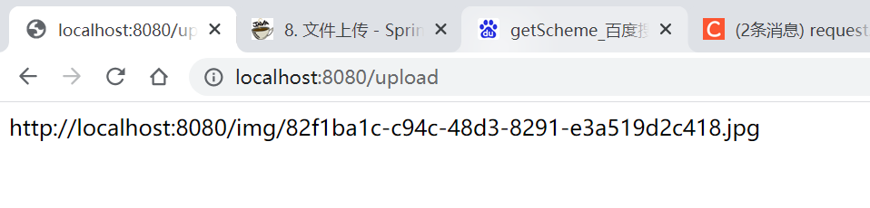

文件上传
文件上传通过MultipartResolver接口，有两个实现类，分别为StandardServletMultipartResolver和CommonsMultipartResolver，由于CommonsMultipartResolver要引入第三方依赖包，而前者只要使用Servlet API，故多使用StandardServletMultipartResolver，下面介绍用Spring MVC和Spring Boot配置的两种方式
通过Spring MVC配置
配置
在📃springmvc-servlet.xml中，加入bean，注意这里的id必须为multipartResolver
<bean class="org.springframework.web.multipart.support.StandardServletMultipartResolver" id="multipartResolver">
</bean>
然后在📃web.xml中，配置multipart-config，限制文件大小等
<servlet>
<servlet-name>springmvc</servlet-name>
<servlet-class>org.springframework.web.servlet.DispatcherServlet</servlet-class>
<init-param>
<param-name>contextConfigLocation</param-name>
<param-value>classpath:spring-servlet.xml</param-value>
</init-param>
<multipart-config>
<!--文件保存的临时目录，这个目录系统不会主动创建，当超过内存保存文件最大值后创建-->
<location>E:\\temp</location>
<!--上传的单个文件大小-->
<max-file-size>1048576</max-file-size>
<!--上传的总文件大小-->
<max-request-size>1048576</max-request-size>
<!--这个就是内存中保存的文件最大大小-->
<file-size-threshold>4096</file-size-threshold>
</multipart-config>
</servlet>
测试
创建jsp页面，上传方式为post ，enctype属性有如下几种形式：
- application/x-www=form-urlencoded：默认方式，只处理表单域中的 value 属性值，采用这种编码方式的表单会将表单域中的值处理成 URL 编码方式。
- multipart/form-data：这种编码方式会以==二进制流==的方式来处理表单数据，这种编码方式会把文件域指定文件的内容也封装到请求参数中，不会对字符编码。
- text/plain：除了把空格转换为 “+” 号外，其他字符都不做编码处理，这种方式适用直接通过表单发送邮件。
<form action="/upload" method="post" enctype="multipart/form-data">
<input type="file" name="file">
<input type="submit" value="上传">
</form>
Controller类，对传入的图片文件，完成如下操作：
- 在原文件名前加上UUID，防止文件名冲突
- 将文件储存在
📂webapp/img/下，并返回文件地址 - 为保证能访问静态资源，在
📃springmvc-servlet.xml中加入<mvc:default-servlet-handler />，让Spring MVC默认不处理静态资源
@Controller
public class MyController {
@GetMapping("/user")
public Object sayHello(){
return "hello";
}
@RequestMapping("/upload")
@ResponseBody
public String upload(MultipartFile file, HttpServletRequest req) {
//获取Servlet上下文，用于读取全局配置参数
ServletContext context = req.getServletContext();
String realPath = context.getRealPath("/img");
File folder = new File(realPath);
if (!folder.exists()) folder.mkdirs();
//获取文件名
String oldName = file.getOriginalFilename();
//UUID做新文件名，防止冲突
String newName = UUID.randomUUID().toString() + oldName.substring(oldName.lastIndexOf("."));
try {
//transferTo保存文件
file.transferTo(new File(folder, newName));
//getScheme返回当前协议（HTTP/HTTPS），getServerName返回地址，getServerPort返回端口号
String url = req.getScheme() + "://" + req.getServerName() + ":" + req.getServerPort() + "/img/" + newName;
return url;
} catch (IOException e) {
e.printStackTrace();
}
return "failed";
}
}

通过 Spring Boot 配置
SpringBoot 自动引入StandardServletMultipartResolver，不用进行注册
配置在📃application.properties中
# 是否启用 Spring MVC 多分部上传
spring.servlet.multipart.enabled=true
# 文件写入磁盘的最大大小，单位 KB或 MB
spring.servlet.multipart.file-size-threshold=0
# 配置最大上传单个文件大小
spring.servlet.multipart.max-file-size = 20MB
# 所有文件最大大小
spring.servlet.multipart.max-request-size=200MB
# 指定默认上传的文件夹
spring.servlet.multipart.location=
# 是否延迟多部件文件请求
spring.servlet.multipart.resolve-lazily=false
多文件上传
相同key
jsp如下，多了个multiple属性
<form action="/upload" method="post" enctype="multipart/form-data">
<input type="file" name="files" multiple>
<input type="submit" value="上传">
</form>
接收时改为数组即可：
@Controller
public class MyController {
@RequestMapping("/upload")
@ResponseBody
public String upload(MultipartFile[] file, HttpServletRequest req) {}
}
不同key
jsp如下：
<form action="/upload" method="post" enctype="multipart/form-data">
<input type="file" name="file1">
<input type="file" name="file2">
<input type="submit" value="上传">
</form>
接收时定义多个变量即可：
@Controller
public class MyController {
@RequestMapping("/upload")
@ResponseBody
public String upload(MultipartFile file1, MultipartFile file2, HttpServletRequest req) {}
}
文件下载
@RequestMapping(value="/download")
public String downloads(HttpServletResponse response ,HttpServletRequest request) throws Exception{
//要下载的图片地址
String path = request.getServletContext().getRealPath("/img");
String fileName = "82f1ba1c-c94c-48d3-8291-e3a519d2c418.jpg";
//1、设置response 响应头
response.reset(); //设置页面不缓存,清空buffer
response.setCharacterEncoding("UTF-8"); //字符编码
response.setContentType("multipart/form-data"); //二进制传输数据
//设置响应头
response.setHeader("Content-Disposition",
"attachment;fileName="+URLEncoder.encode(fileName, "UTF-8"));
File file = new File(path,fileName);
//2、 读取文件--输入流
InputStream input=new FileInputStream(file);
//3、 写出文件--输出流
OutputStream out = response.getOutputStream();
byte[] buff =new byte[1024];
int index=0;
//4、执行 写出操作
while((index= input.read(buff))!= -1){
out.write(buff, 0, index);
out.flush();
}
out.close();
input.close();
return null;
}
前端：
<a href="/download">点击下载</a>